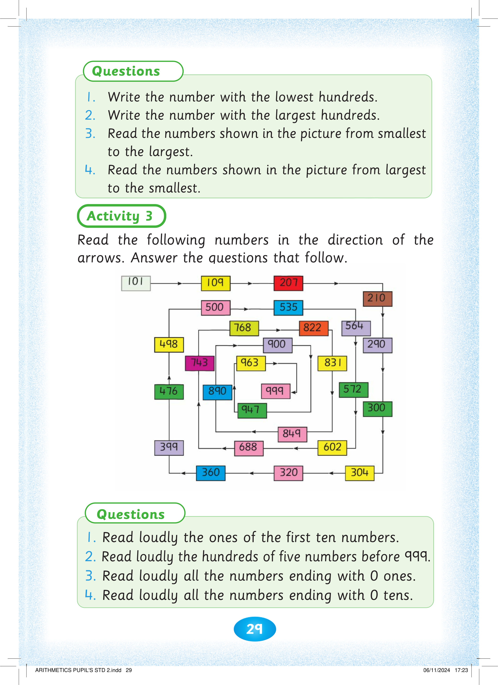
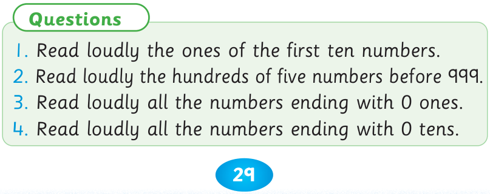
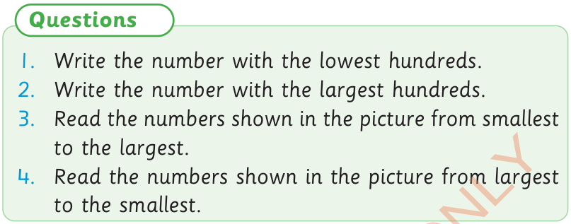

29




Questions

1. Write the number with the lowest hundreds.

2. Write the number with the largest hundreds.
3. Read the numbers shown in the picture from smallest to the largest.
4. Read the numbers shown in the picture from largest to the smallest.
Activity 3
Read the following numbers in the direction of the arrows. Answer the questions that follow.
Questions
1. Read loudly the ones of the first ten numbers.
2. Read loudly the hundreds of five numbers before 999.
3. Read loudly all the numbers ending with 0 ones.
4. Read loudly all the numbers ending with 0 tens.


ARITHMETICS PUPIL'S STD 2.indd 29
06/11/2024 17:23